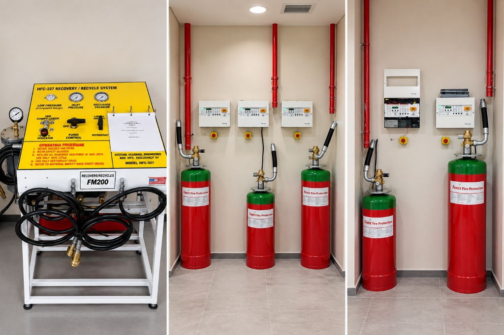
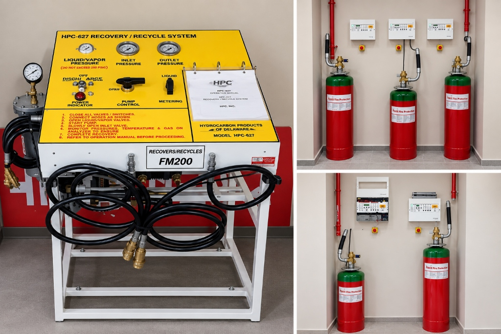
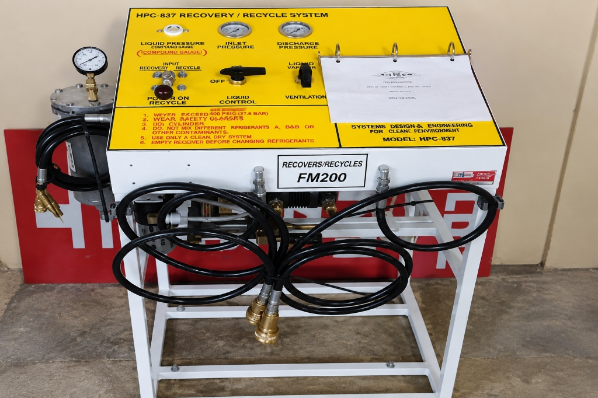

FM200
Gaz Dolumu
Boşalan veya basınç kaybı yaşayan söndürme silindirleriniz için teknik standartlara uygun FM200 gaz dolumu.
Yangın anında devreye girmiş ya da periyodik manometre kontrollerinde basınç eksilmesi tespit edilmiş FM200 (HFC-227ea) tüplerinin yerinde tespiti, hassas dolumu ve sızdırmazlık testleri Fenix Yangın teknik kadrosunca güvenle yürütülür.

FM200 Gaz Dolumu Nedir?
FM200 gaz dolumu; yangın anında devreye girerek boşalmış ya da zamanla basınç kaybı yaşamış söndürme silindirlerine, kimyasal adıyla HFC-227ea temiz söndürücü gazın teknik kurallara ve sistem projesine uygun miktarda yeniden doldurulması işlemidir.
FM200 gazı renksiz ve kokusuz yapısıyla bilinir. Silindirler içerisinde basınç altında sıvı fazda muhafaza edilir ve boşalma anında ortama püskürtülerek gaz fazına geçer. Fiziksel yangın söndürme prensibiyle ısı enerjisini hızla emerek yangını durdurur.
Su, köpük veya kuru kimyevi toz gibi geleneksel söndürücüler uygulandıkları alanda kalıntı bırakırken, FM200 gazı boşaldıktan sonra herhangi bir tortu bırakmaz ve ek bir temizlik gerektirmez. Bu nedenle sunucu odaları, elektrik panoları ve hassas elektronik donanımların bulunduğu mahallerde yaygın olarak tercih edilir.
FM200 Gaz Dolumu Ne Zaman Gerekir?
Kaynak dokümantasyon ve işletme güvenliği prensiplerine göre silindir dolumu ve gaz yenilemesi iki ana durumda zorunlu hale gelir:
Yangın alarm paneli ve algılama hatlarının devreye girmesiyle birlikte FM200 gazı korunan hacme otomatik olarak püskürtülür. Sistem yangına müdahale ettikten sonra silindirler tamamen boşalacağından, mahalin korunmasız kalmaması için en kısa sürede yeniden dolum yapılmalıdır.
Sistem üzerinde yer alan basınç ölçerlerin (manometrelerin) düzenli olarak test edilmesi gerekir. Yangına müdahale edilmemiş olsa dahi, vana veya contalardaki yıpranmalar sonucu basınç kaybı saptandığında gaz eksikliklerinin tamamlanması ve silindirin nominal basınca getirilmesi gerekir.

FM200 Gaz Dolumu ve Sistem Kontrolleri
FM200 dolum işlemi yalnızca gaz transferinden ibaret olmayıp, silindirin ve vana donanımlarının basınç bütünlüğünü korumayı hedefleyen teknik bir süreçtir:
FM200 Gazlı Söndürme Sisteminin Yapısı
FM200 teknik şartnamelerinde ve mühendislik tasarımlarında aranan temel sistem ekipmanları ve dolumla ilişkili bileşenler.
Gazın sıvı fazda ve basınç altında emniyetle muhafaza edildiği çelik tüpler.
Tüp içindeki azot basıncını devamlı gösteren kalibreli manometreler.
Hızlı açılma sağlayan diferansiyel basınçlı silindir vanaları.
Gazın mahale dengeli ve homojen dağılmasını sağlayan özel nozul hatları.
Solenoid bobinleri ve manuel acil durum boşaltma mekanizmaları.
Dedektör sinyallerini işleyerek ateşi tespit eden ve boşaltmayı yöneten panel.
FM200 Gaz Dolumu Sonrası Kontroller
Dolum tamamlandıktan sonra sistemin sahada güvenle çalışabilmesi için uygulanan kritik doğrulama aşamaları:
Doldurulan silindirin darası ve net gaz miktarı kalibreli kantarla tartılarak silindir etiketine işlenir.
Azot basınçlandırma seviyesi manometre üzerinden kontrol edilir ve basınç dengesi teyit edilir.
Silindir vanası, emniyet diski ve bağlantı dişleri gaz dedektörü veya test çözeltisiyle kaçak kontrolüne alınır.
Tüpler mahale getirilerek manifold hattına bağlanır; selenoid ve panel kontrolleri yapılarak sistem aktif edilir.

FM200 Gazı Hakkında
Temiz söndürücü gazlar sınıfında yer alan FM200 (HFC-227ea) gazının öne çıkan fiziksel ve operasyonel özellikleri:
FM200 gazı elektrik iletkenliği olmayan, yanıcı yüzeyde kimyasal leke veya korozyon oluşturmayan temiz bir ajandır. Çelik, bakır, alüminyum, pirinç, paslanmaz çelik gibi metaller ve elektronik devre kartları üzerinde fiziksel hasar bırakmaz. Yangın sonrasında havalandırma yoluyla ortamdan kolaylıkla tahliye edilir.
Kaynak teknik prensiplere uygun olarak gazlı sistemler yangın uyarısıyla hızla devreye girer ve yaklaşık 8 ila 10 saniye aralığında nozullardan ortama boşalır. Ozon tüketme potansiyeli bulunmayan bu sistem, minimum depolama alanı gereksinimi ile kritik hacimlerde yüksek güvenlik sağlar.
FM200 Gazı Fiyatları Nasıl Belirlenir?
FM200 gaz dolumu maliyetleri sabit bir tarife üzerinden değil, projenin ve korunan mahalin teknik gereksinimlerine göre hesaplanır:
Dolum Fiyatı Teklifi Alın
Sisteminizde bulunan silindir kapasitelerini, tüp adedini veya basınç durumunu ileterek tesisinize özel FM200 gaz dolum fiyat teklifinizi hemen hazırlayalım.
Fiyat Teklifi İsteyinFM200 Gazlı Söndürme Sistemi Bakımı
Gaz dolum ihtiyacı çoğu zaman yıllık periyodik bakım kontrolleri sırasında ortaya çıkar. Sisteminizin manometre değerleri, selenoid bobinleri ve algılama hatları düzenli denetlenerek olası kaçaklar erkenden belirlenir.
FM200 Gaz Dolumu Hakkında Merak Edilenler
FM200 söndürme tüplerinin dolum prosedürleri, basınç kriterleri ve kontrolleri hakkında en sık sorulan sorular.
FM200 gaz dolumu, sistem bir yangın veya test anında devreye girerek gaz boşalttığında ya da periyodik muayenelerde manometre basıncının yeşil alanın altına düştüğü ve gaz miktarında kayıp tespit edildiği durumlarda gecikmeksizin yapılmalıdır.
Silindir üzerinde bulunan manometre ibresinin nominal çalışma sınırının (kırmızı bölgeye doğru) altına düşmesi veya periyodik kontrollerde yapılan hassas tartım ölçümlerinde silindir ağırlığının etiket değerinden eksik çıkması basınç kaybına işaret eder.
Dolum işlemi güvenlik standartları, hassas tartım ve azot basınçlandırma ekipmanlarının gerekliliği doğrultusunda yetkili dolum istasyonumuzda kontrollü şartlarda gerçekleştirilir; ardından silindirler sahada yerine monte edilir.
FM200 dolum fiyatları; silindirin kapasitesine (doldurulacak net kilogram miktarına), silindir adedine, valf/conta yenileme ihtiyacına ve güncel piyasa koşullarına bağlı olarak teknik değerlendirme sonrasında belirlenir.
Dolum işlemi tamamlandıktan sonra yapılan ağırlık ölçümlerini, basınç değerlerini ve uygulanan sızdırmazlık testlerini içeren teknik Dolum ve Servis Formu hazırlanarak sistem yetkililerine teslim edilir.
İlgili Hizmetler ve Sistemler
Fenix Yangın bünyesinde gazlı söndürme sistemleri için sunduğumuz diğer mühendislik çözümleri.
HFC-227ea temiz gazlı yangın söndürme sistemlerinin projelendirme ve montajı.
Sistem İncele →Silindir basınçları, vanalar ve dedektör hatlarının düzenli yerinde denetimi.
Bakım Detayları →Mahalin 10 dakikalık gaz tutma süresinin kapı fanı ile simülasyonu.
Test Hizmeti →FM200 Gaz Dolumu İçin Hemen İletişime Geçin
Boşalan veya basınç kaybı yaşayan söndürme silindirleriniz için teknik keşif ve dolum randevusu planlayın.